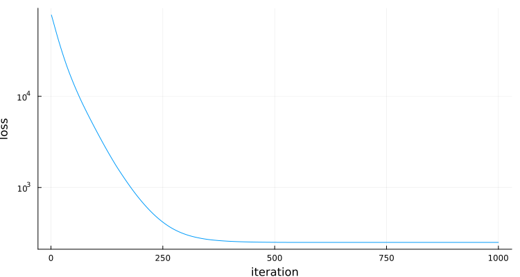
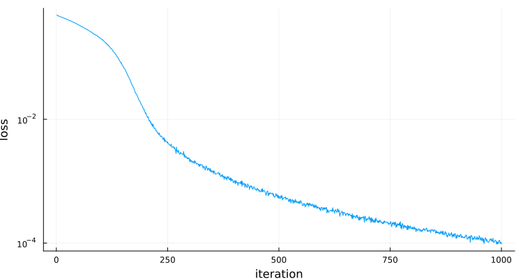
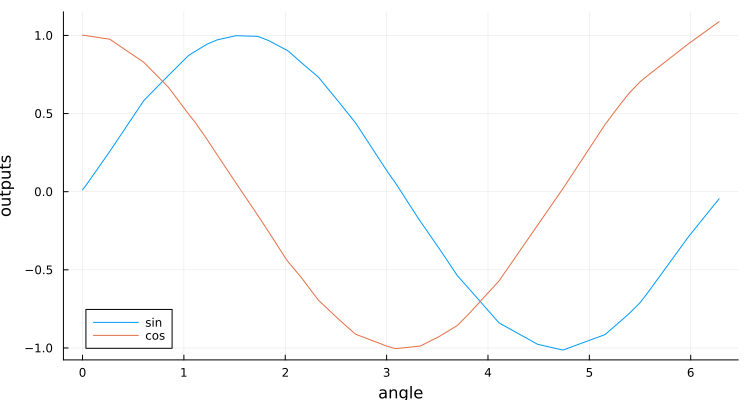

Examples
Examples to illustrate the use of ComputationGraphs.
Contents
Adam's method for optimization
Adam's gradient-based optimization can be easily implement using the recipe adam! which includes all the "messy" formulas. In this example, we use Adam's method to minimize a quadratic criterion of the form
\[ J(x) = \| A\, x -b \|^2\]
with respect to $x$. To construct of the computation graph that accomplishes this, we use:
using ComputationGraphs
graph = ComputationGraph{Float64}()
A = variable(graph, 400, 300)
x = variable(graph, 300)
b = variable(graph, 400)
loss = @add graph norm2(times(A, x) - b)
theta = (;x,)
(; eta, beta1, beta2, epsilon,
init_state, state, next_state,
next_theta, gradients) = adam!(graph; loss, theta)With this graph in place, the actual optimization can be carried out as follows:
- We start by initializing the Adam's parameters
set!(graph, eta, 2e-2)
set!(graph, beta1, 0.9)
set!(graph, beta2, 0.999)
set!(graph, epsilon, 1e-8)- We (randomly) initialize the problem data (freeing the random see for repeatability)
using Random
Random.seed!(0)
set!(graph, A, randn(size(A)))
set!(graph, b, randn(size(b)))- We then (randomly) initialize the parameters to optimize (freeing the random see for repeatability)
Random.seed!(0)
init_x=randn(Float64,size(x))
set!(graph, x, init_x)- We then initialize Adam's internal state
copyto!(graph, state, init_state)- We are now ready to run Adam's iterations:
using BenchmarkTools, Plots
l=get(graph,loss)
println("initial loss: ", l)
all=(;state...,theta...)
next_all=(;next_state...,next_theta...)
nIterations=1000
losses=Vector{Float64}(undef,nIterations)
bmk = @benchmark for i in 1:$nIterations
compute!($graph, $next_all)
copyto!($graph, $all, $next_all)
$l=get($graph, $loss)
$losses[i]=$l[1]
end setup =( # reinitialize x and solver for each new sample
set!($graph, $x, $init_x), copyto!($graph, $state, $init_state)
) evals=1 # a single evaluation per sample
println("final loss: ", l)
plt=Plots.plot(losses,yaxis=:log,ylabel="loss",xlabel="iteration",label="",size=(750,400))initial loss: fill(125008.67163886719)
final loss: fill(116.63722408535794)
GKS: cannot open display - headless operation mode active
BenchmarkTools.Trial: 92 samples with 1 evaluation per sample.
Range (min … max): 32.581 ms … 35.613 ms ┊ GC (min … max): 0.00% … 0.00%
Time (median): 32.699 ms ┊ GC (median): 0.00%
Time (mean ± σ): 32.764 ms ± 361.001 μs ┊ GC (mean ± σ): 0.00% ± 0.00%
▄█▃▃▁
▆█████▇▇▄▃▄▁▁▃▁▁▁▁▃▁▁▁▁▁▁▁▁▁▁▁▁▁▁▁▁▁▁▁▁▁▁▁▁▁▁▁▁▁▁▁▁▁▁▁▁▁▁▁▁▃ ▁
32.6 ms Histogram: frequency by time 34.4 ms <
Memory estimate: 0 bytes, allocs estimate: 0.As expected for a convex optimization, convergence is pretty smooth:

For @benchmark to reflect the time an actual optimization, we reset the optimization variable x and the solver's state at the start of each sample (using @benchmark's setup code).
Adam's method with projection
Suppose now that we wanted to add a "projection" to Adam's method to keep all entries of x positive. This could be done by simply modifying the next_theta produced by Adam to force all the entries of next_step.x to be positive, using the relu function:
next_theta = (x=relu(graph,next_theta.x),)We can now repeat the previous steps (reinitializing everything for a fresh start):
set!(graph, x, init_x)
copyto!(graph, state, init_state)
l=get(graph,loss)
println("initial loss: ", l)
all=(;state...,theta...)
next_all=(;next_state...,next_theta...)
nIterations=1000
losses=Vector{Float64}(undef,nIterations)
bmk = @benchmark for i in 1:$nIterations
compute!($graph, $next_all)
copyto!($graph, $all, $next_all)
$l=get($graph,$loss)
$losses[i]=$l[1]
end setup =( # reinitialize x and solver for each new sample
set!($graph, $x, $init_x), copyto!($graph, $state, $init_state)
) evals=1 # a single evaluation per sample
println("final loss: ", l)
plt=Plots.plot(losses,yaxis=:log,ylabel="loss",xlabel="iteration",label="",size=(750,400))initial loss: fill(125008.67163886719)
final loss: fill(249.7135504173925)
BenchmarkTools.Trial: 91 samples with 1 evaluation per sample.
Range (min … max): 32.870 ms … 34.362 ms ┊ GC (min … max): 0.00% … 0.00%
Time (median): 33.025 ms ┊ GC (median): 0.00%
Time (mean ± σ): 33.058 ms ± 172.747 μs ┊ GC (mean ± σ): 0.00% ± 0.00%
▂▄ ▄█▄ ▂ █ ▂▄
▆▁▆▆▄██▆█████████▄█▁███▁█▁█▁█▄▁▄▄▁▆▁▁▁▁▁▁▁▁▁▁▁▁▁▁▁▄▁▁▁▁▁▁▁▁▄ ▁
32.9 ms Histogram: frequency by time 33.5 ms <
Memory estimate: 0 bytes, allocs estimate: 0.
For @benchmark to reflect the time an actual optimization, we reset the optimization variable x and the solver's state at the start of each sample (using @benchmark's setup code).
Neural network training
In this example, we combine the two recipes denseChain! and adam! to train and query a dense forward neural network of form:
x[1] = input
x[2] = activation(W[1] * x[1] + b[1])
...
x[N-1] = activation(W[N-2] * x[N-2] + b[N-2])
output = W[N-1] * x[N-1] + b[N-1] # no activation in the last layer
loss = some_loss_function(output-reference)As in Neural-network recipes, our goal is to train a neural network whose input is an angle in the [0,2*pi] range with two outputs that return the sine and cosine of the angle. To accomplish this will use a network with 1 input, 2 output, a few hidden layers, and relu activation functions.
- We start by using denseChain! to construct a graph that performs all the computations needed
to do inference and compute the (training) loss function for the network. The computation graph will support:
- inference, i.e., compute the output for a given input;
- training, i.e., minimize the loss for a given set of inputs and desired outputs. For training
we will use a large batch size, but for inference we will only provide one input at a time.
using ComputationGraphs, Random
graph=ComputationGraph{Float32}()
hiddenLayers=[30,20,30]
(; inference, training, theta)=denseChain!(graph;
nNodes=[1,hiddenLayers...,2],
inferenceBatchSize=1,
trainingBatchSize=5_000,
activation=ComputationGraphs.relu,
loss=:mse)
println("graph with ", length(graph), " nodes and ",ComputationGraphs.memory(graph)," bytes")graph with 30 nodes and 3367440 byteswhere
+ `nNodes` is a vector with the number of nodes in each layer, starting from the
input and ending at the output layer.
+ `inferenceBatchSize` is the number of inputs for each inference batch.
+ `trainingBatchSize` is the number of inputs for each training batch.
+ `activation`: is the activation function.
+ `loss` defines the loss to be the mean square error.
and the returned tuple includes
+ `inference::NamedTuple`: named tuple with the inference nodes:
+ `input` NN input for inference
+ `output` NN output for inference
`+ training::NamedTuple`: named tuple with the training nodes:
+ `input` NN input for training
+ `output` NN output for training
+ `reference` NN desired output for training
+ `loss` NN loss for training
+ `theta::NamedTuple`: named tuple with the NN parameters (all the matrices W and b)- We then use the adam! recipe add to the graph the computation needed to optimize the weights.
(; eta, beta1, beta2, epsilon,
init_state, state, next_state,
next_theta, gradients) = adam!(graph; loss=training.loss, theta=theta)
println("graph with ", length(graph), " nodes and ",ComputationGraphs.memory(graph)," bytes")graph with 195 nodes and 8327772 byteswhere we passed to [adam!](@ref) the nodes that correspond to the neural network loss and use
the neural network parameters as the optimization variables.
In return, we get back the nodes with Adam's parameters as well as the nodes needed for the
algorithm's update.- We initialize the network weights with random (but repeatable) values. We use a function for this, to be able to call it many times.
function init_weights(graph,theta)
Random.seed!(0)
for k in eachindex(theta)
set!(graph,theta[k],0.2*randn(Float32,size(theta[k])))
end
endWe are almost ready to use Adam's iterative algorithm, similarly to what was done in Adam's method for optimization. However, and as commonly done in training neural networks, we will use a different random set of training data at each iteration.
To this effect, we create a "data-loader" function that will create a new set of data at each iteration:
function dataLoader!(input,output)
for k in eachindex(input)
input[k]=(2*pi)*rand(Float32)
output[1,k]=sin(input[k])
output[2,k]=cos(input[k])
end
end- Now we are indeed ready for training:
using BenchmarkTools, Plots
# Initialize Adam's parameters
set!(graph, eta, 8e-4)
set!(graph, beta1, 0.9)
set!(graph, beta2, 0.999)
set!(graph, epsilon, 1e-8)
# create arrays for batch data
input=Array{Float32}(undef,size(training.input))
output=Array{Float32}(undef,size(training.reference))
# Create array to save losses
nIterations=1_000
losses=Vector{Float32}(undef,nIterations)
# Adam iteration
all=(;state...,theta...)
next_all=(;next_state...,next_theta...)
bmk = BenchmarkTools.@benchmark for i in 1:$nIterations
dataLoader!($input,$output)
set!($graph,$training.input,$input)
set!($graph,$training.reference,$output)
compute!($graph, $next_all)
copyto!($graph, $all, $next_all)
l=get($graph, $training.loss)
$losses[i]=l[1]
end setup =( # reinitialize NN weights and solver for each new sample
init_weights($graph,$theta), copyto!($graph, $state, $init_state)
) evals=1 # a single evaluation per sample
println("final loss: ", get(graph,training.loss))
plt=Plots.plot(losses,yaxis=:log,
ylabel="loss",xlabel="iteration",label="",size=(750,400))final loss: fill(9.6966294f-5)
BenchmarkTools.Trial: 3 samples with 1 evaluation per sample.
Range (min … max): 3.494 s … 3.516 s ┊ GC (min … max): 0.00% … 0.00%
Time (median): 3.507 s ┊ GC (median): 0.00%
Time (mean ± σ): 3.506 s ± 11.330 ms ┊ GC (mean ± σ): 0.00% ± 0.00%
█ █ █
█▁▁▁▁▁▁▁▁▁▁▁▁▁▁▁▁▁▁▁▁▁▁▁▁▁▁▁▁▁▁▁▁█▁▁▁▁▁▁▁▁▁▁▁▁▁▁▁▁▁▁▁▁▁▁█ ▁
3.49 s Histogram: frequency by time 3.52 s <
Memory estimate: 0 bytes, allocs estimate: 0.In spite of not being a convex optimization, convergence is still pretty good (after carefully choosing the step size eta).

- We can now check how the neural network is doing at computing the sine and cosine:
angles=0:.01:2*pi
outputs=Array{Float32}(undef,2,length(angles))
for (k,angle) in enumerate(angles)
set!(graph,inference.input,[angle])
(outputs[1,k],outputs[2,k])=get(graph,inference.output)
end
plt=Plots.plot(angles,outputs',
xlabel="angle",ylabel="outputs",label=["sin" "cos"],size=(750,400))and it looks like the network is doing quite well at computing the sine and cosine:
